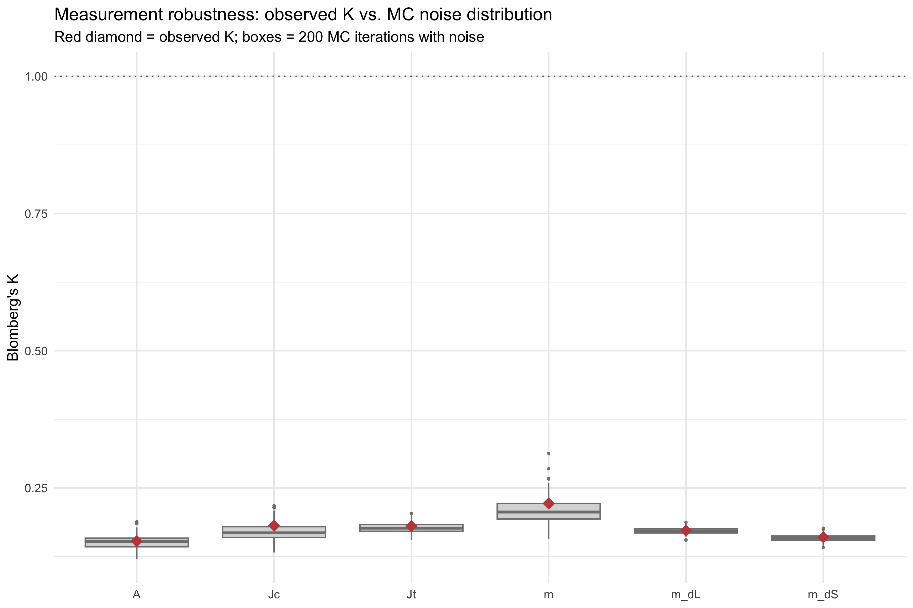

Are Chaetodontidae signal results robust to measurement noise?
Tip
Core recipe. Monte Carlo perturbation test: adds realistic measurement noise (estimated from multi-image error SDs) to every species’ pavo values 200 times and recomputes Blomberg’s K each time. If the observed K sits above the noise distribution, the signal is real.
Poster outputs.figures/mc-robustness-K.pdf — boxplot of MC K distributions with observed K overlaid as red diamonds.
These are representative measurement error standard deviations estimated from multi-image measurements of butterflyfish exemplars. In the student workflow, each group measures their own error species in Demo 8.
K_long <-data.frame(variable =rep(colnames(K_mc), each =nrow(K_mc)),K_mc =as.vector(K_mc),stringsAsFactors =FALSE)obs_df <-data.frame(variable =names(obs_K),K_obs =as.numeric(obs_K),stringsAsFactors =FALSE)p <-ggplot(K_long, aes(x = variable, y = K_mc)) +geom_boxplot(fill ="grey85", color ="grey50", outlier.size =0.8) +geom_point(data = obs_df,aes(x = variable, y = K_obs),shape =18, size =5, color ="#c14a4a") +geom_hline(yintercept =1, linetype ="dotted", color ="grey40") +labs(title ="Measurement robustness: observed K vs. MC noise distribution",subtitle ="Red diamond = observed K; boxes = 200 MC iterations with noise",x =NULL, y ="Blomberg's K" ) +theme_minimal(base_size =14)print(p)

Monte Carlo robustness: observed K (red diamonds) vs distribution of K under measurement noise (200 iterations). Variables where the diamond sits above the box are robust.
for (v in pavo_vars) { mc_vals <- K_mc[, v] mc_upper <-quantile(mc_vals, 0.975, na.rm =TRUE) mc_lower <-quantile(mc_vals, 0.025, na.rm =TRUE) obs <- obs_K[v] robust <- obs > mc_uppercat(sprintf(" %-5s obs K = %.3f MC 95%% CI = [%.3f, %.3f] %s\n", v, obs, mc_lower, mc_upper,if (robust) "ROBUST"else"within noise"))}
m obs K = 0.222 MC 95% CI = [0.164, 0.254] within noise
A obs K = 0.153 MC 95% CI = [0.130, 0.174] within noise
Jc obs K = 0.181 MC 95% CI = [0.137, 0.206] within noise
Jt obs K = 0.180 MC 95% CI = [0.159, 0.194] within noise
m_dS obs K = 0.160 MC 95% CI = [0.147, 0.170] within noise
m_dL obs K = 0.172 MC 95% CI = [0.162, 0.184] within noise